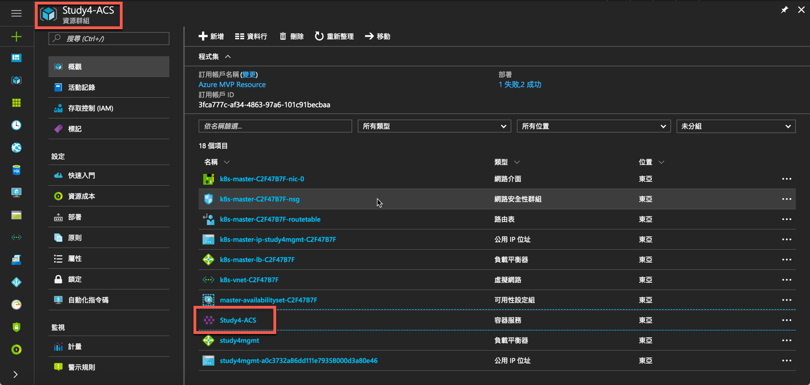
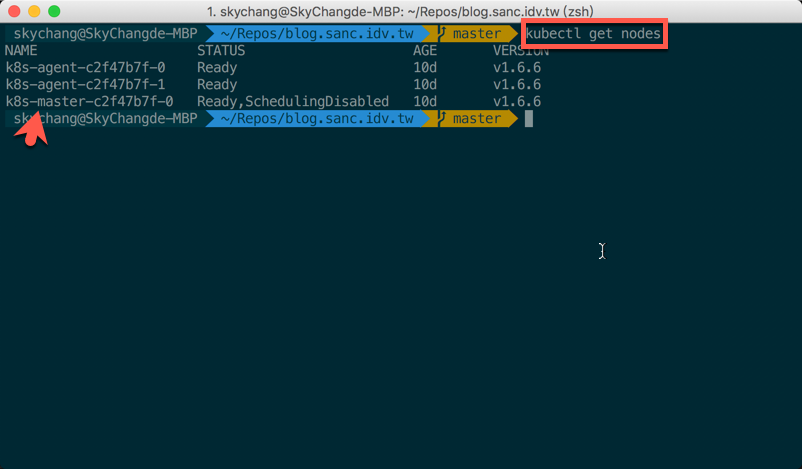
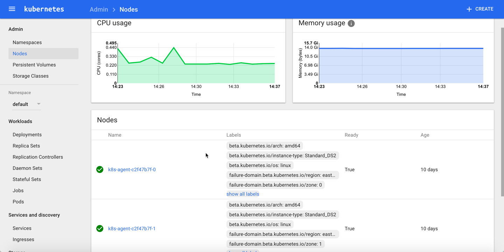
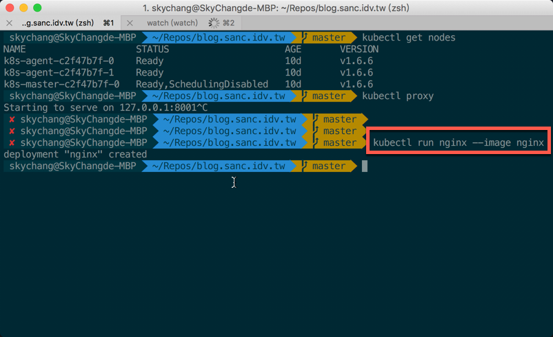
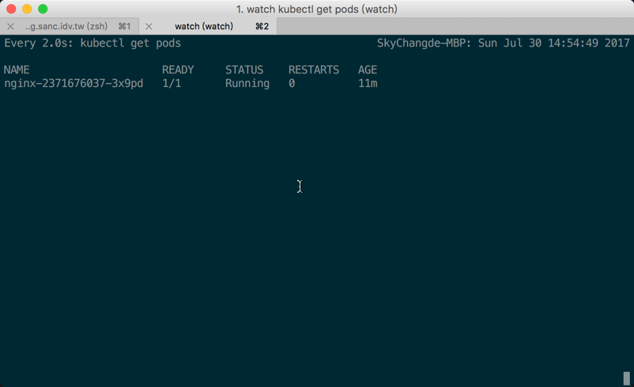
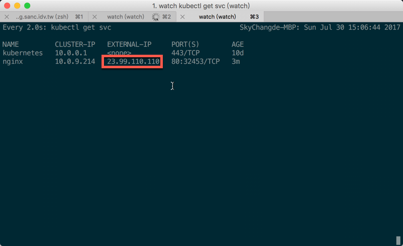
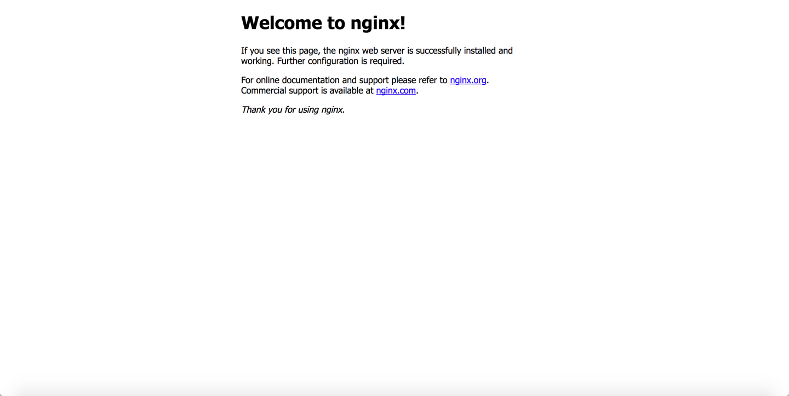

警告
Azure Container Service 已經成 Azure Kubernetes Service，這篇已經棄用
新文章請參考這篇
前言
上一篇我們花了一點時間，透過 Azure 的 Container Service 來搭建了一個 Kubernetes，而這篇，我們會來看看，如何操作 Kubernetes。
關於 Kubernetes
在開始操作前，我們稍微補上一下，上一篇沒有提到的，Kubernetes。
Kubernetes 其實不是 Microsoft 開發的軟體或服務，他其實是從 Google 發展出來的：而 Kubernetes 發展的目的，就是為了簡化 Container 的管理與部屬：舉例來說，我們可以輕易的將一堆 Container 連線、開幾個 Container 、資源大小等等，全部用設定檔的方式設定好，之後 Kubernetes 就會自動幫忙處理。
舉例來說，一個簡單的三層式的 Server 架構 ( 雖然 Kubernetes 通常是在處理 MicroService 架構，但這邊就讓我用三層式的 Server 舉例吧 )，如果使用單純的 Dcoker ，我們可能要去處理 Server 與 Server 間如何通訊，可能不好去監控每個容器的狀況，也可能不好規劃資源的大小等等。
而 Kubernetes 就可以輕鬆地幫我們處理掉這些事情：那為什麼 Microsoft Azure 會有這個服務呢? 那當然是因為現在 Microsoft 走的是 Service 的未來，就算是不同陣營，不同公司的產品，在 Azure 上自然也會支援。所以 Kubernetes 就是 Azure Container Service 支援的其中一個軟體。
喔，執得一提的是，據說 Kubernetes 之父，目前也在 Microsoft 就職，所以也可以感受到未來發展此產品的決心。
備註，此篇文章主要來源由這裡為主，再經由自己實際測試與實驗的補充，若有興趣的朋友可以以直接參考官網。
安裝 kubectl
在開始之前，主要控制 Kubernetes ，還是會透過 Kubernetes 的 Cli 為主，而 Kubernetes 的 Cli 稱為 Kubectl：而在這邊，要安裝 Kubectl ，可以透過以下指令，但以下指令需要先安裝 Azure Cli，還沒安裝的朋友可以透過此網址安裝。
1 | az acs kubernetes install-cli |
若你是用 MacOS ，還有另外一個選擇，就是透過 Brew 進行安裝，同樣的，如果要透過 Brew 安裝，也需要先安裝 Brew。
那還有沒有別的安裝方式，當然有，可以參考官網這篇，我們也可以透過 curl 來下載安裝，這邊大家可以選擇自己喜歡的安裝方式。
最後，不管用什麼方法安裝，基本上最後還是需要 Azure Cli ，所以還是乖乖的安裝 Azure Cli 吧….
( 小弟測試是 MacOS 平台，而以前就已經安裝好 Brew ，所以就透過 Brew 來安裝了 )
設定 kubectl
完成安裝後，我們要設定 kubectl，畢竟，不能讓 kubectl 可以隨便亂連，這樣是很危險的：所以我們可以透過 az 的指令，將 Kubernetes 的設定檔下載下來，並更新至 kubectl。
底下指令，resource-group 為你的群組名稱， name 為你的 K8S 名稱，當然，要把[]去掉。
1 | az acs kubernetes get-credentials --resource-group=[你的資源群組] --name=[你的 K8S 名稱] |
下圖紅色框框代表的是 ResourceGroup ( 左上角 )，Container Name ( 右邊 )

完成之後，可以透過底下指令，來取得目前所有的節點。
1 | kubectl get nodes |
從下圖，我們可以發現，我們有一個 Master 節點，和兩個 Agent ：這其實就會對應到上一篇提到的安裝過程選擇的數量，通常 Master 主要是負責管理與維運，所以裡面不會放置我們的 Container ，而 Agent Node 就是提供給我們放置 Container 的地方了，當然，我們也不用自行決定放在哪一個 Agent Node ，Kuberentes 會自行幫我們放置。

開啟 UI
透過 kubectl ，我們也可以建立 Proxy ，讓我們可以透過通道來連線到 Kubernetes UI ( 對於指令白痴的小弟我，極為重要啊！！ )，我們可以透過 Kubectl Proxy 連建立通道，如下指令。
1 | kubectl proxy |
若順利，則會提示位置資訊 “ Starting to serve on 127.0.0.1:8001 “
這時候，我們就可以開啟瀏覽器，連線到 127.0.0.1:8001/ui 了。 ( 請注意，有 /ui 喔！)

部署 NGINX 容器
接著，我們可以先試著部署 NGINX 容器試試看，NGINX 是一個非常不錯的 Web Server，下一篇，我們再來部署 .NET Core 的應用。
我們這邊使用 kubectl run 這個指令， 後面接的 nginx 是名稱，可以自行定義，我們可以透過這個名稱，來了解我們部署了什麼東西上去，後面的 image 則是要使用什麼影像檔，這邊，我們直接使用 Docker Hub 的 nginx 影像檔來進行部署
1 | kubectl run nginx --image nginx |

另外，這邊補充一下，在 Container 的世界裡面，我們使用的幾乎都是 image ，並不會把 Container 實體傳上去，通常我們都是會把 image 傳到例如公開的 Docker Hub ，或是私有的 Azure Container Registry，而在執行環境上，再透過網路把 image 下載下來，並運行 Container。
接下來，我們可以使用 get 來查看目前的狀況，而這邊出現一個新的名詞，稱為 pods，其實在 Kubernetes 裡面，最小為稱之為 Pods，這個下一章會再介紹，我們現在只要知道，我們 run 了一個 Pods，而透過底下指令，可以取得所有 Pods 的狀態。
1 | kubectl get pods |
而這邊，其實小弟更喜歡用 Watch 來監控，透過 Watch 他會自動更新目前 Pods 的狀況：但 Watch 也是需要額外安裝的，在 MacOS 底下，可以直接使用 Brew 來安裝 Watch。
我們可以使用底下指令，持續監看。
1 | watch kubectl get pods |

連線 NGINX 容器
雖然建立完成，但這個 Container 其實是還沒有對外公開 ip ，所以我們下一步驟，需要透過指令的方式，公開這台 Container 的服務。
底下比較特殊的是 type ，這邊 type 要選擇 LoadBalancer ，主要是因為在 Azure ， Azure 有自己的 LoadBalance，所以這邊的 Type 要為 LoadBalancer ，才能和 Azure 的 LoadBalanc 對樣。
1 | kubectl expose deployments nginx --port=80 --type=LoadBalancer |
執行開放會需要一點時間，我們可以透過 get svc 來取得目前的開啟狀態。
( 在 Kubernetes ，Service 指的是控制連入聯出等行為的服務，未來會再介紹 )
1 | kubectl get svc |
同樣的，我們也可以透過 watch 來持續監控。
1 | watch kubectl get svc |
如下圖，我們可以看到，ip 已經建立完成，這時候我們就可以透過此 ip 來連入 Web Server。

如下，已經可以連入。

刪除 NGINX Pods 和 Service
最後，我們可以透過底下指令，將 pod 和 service 刪除。
刪除 pod 要取得完整的 pod 名稱。
1 | kubectl delete pod nginx-2371676037-3x9pd |
1 | kubectl delete service nginx |
到這邊，基本的部署試玩就告一段亂。
後記
雖然這邊有很多細節還沒談到，但我們透過簡單的指令，已經可以感受到 Kubernetes ，快速的控制容器，建立與刪除，等強大的功能，後續，就讓我們繼續玩下去。
參考資料
- https://kubernetes.io/docs/home/
- https://docs.microsoft.com/zh-tw/azure/container-service/container-service-kubernetes-walkthrough
- https://docs.microsoft.com/en-us/cli/azure/install-azure-cli
- https://kubernetes.io/docs/tasks/tools/install-kubectl/
- https://kubernetes-v1-4.github.io/docs/user-guide/kubectl/kubectl_delete/